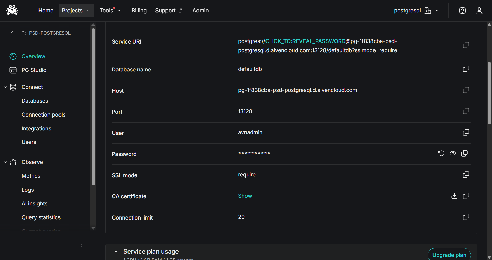
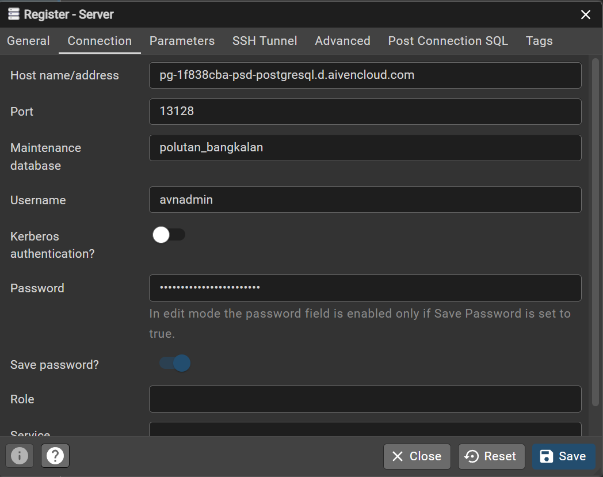
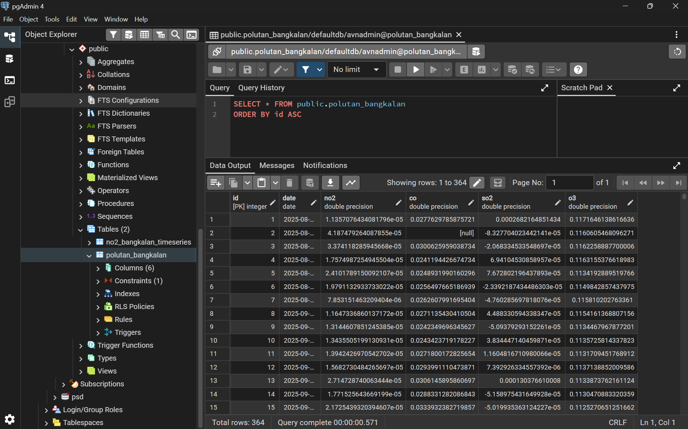
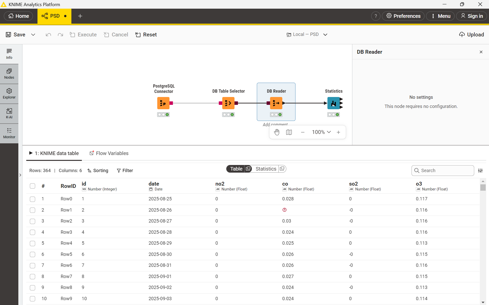
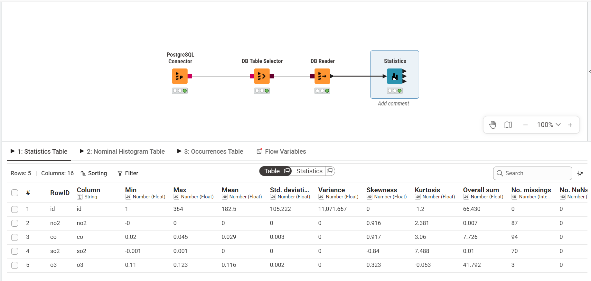

Penjelasan Metrik Statistika Deskriptif#
Saat kita berhadapan dengan data mentah, langkah awal yang wajib dilakukan adalah Exploratory Data Analysis (EDA). Salah satu instrumen utamanya adalah Statistika Deskriptif, yaitu teknik merangkum kumpulan data agar karakteristik dasar, pola sebaran, rentang nilai, serta kualitas datanya dapat dipahami dengan jelas sebelum masuk ke tahap permodelan atau prediksi lanjutan.
Tabel ringkasan berikut memuat metrik untuk berbagai konsentrasi gas polutan udara (\(NO_2\), \(CO\), \(SO_2\), \(O_3\)). Di bawah ini adalah uraian konsep tiap metrik beserta cara perhitungan manualnya:
1. Min & Max#
Penjelasan: Titik nilai terendah (Min) dan nilai tertinggi (Max) yang tercatat dalam suatu variabel. Metrik ini berguna untuk mengidentifikasi batas bawah serta batas atas dari rentang pengukuran data.
Perhitungan Manual: Urutkan seluruh data dari nilai terkecil hingga terbesar.
\(Min = X_1\) (Data urutan pertama)
\(Max = X_n\) (Data urutan terakhir)
2. Mean#
Penjelasan: Nilai rata-rata aritmatika yang mewakili pusat data, dihitung dengan menjumlahkan semua angka observasi lalu membaginya dengan jumlah total data yang valid.
Perhitungan Manual: $\(\bar{x} = \frac{\sum_{i=1}^{n} x_i}{n}\)$ (Jumlahkan seluruh nilai amatan polutan, kemudian bagi dengan total sampel baris data yang ada).
3. Std. Deviation#
Penjelasan: Mengukur seberapa jauh sebaran atau simpangan titik data dari nilai rata-ratanya. Nilai simpangan baku yang kecil menandakan data terkumpul rapat di sekitar rata-rata (konsisten), sedangkan angka yang tinggi menunjukkan adanya variasi fluktuasi yang lebar.
Perhitungan Manual (Sampel): $\(s = \sqrt{\frac{\sum_{i=1}^{n} (x_i - \bar{x})^2}{n-1}}\)$
4. Variance#
Penjelasan: Rata-rata kuadrat dari selisih setiap titik data terhadap nilai rata-ratanya. Secara matematis, varians merupakan kuadrat dari nilai standar deviasi (\(s^2\)).
Perhitungan Manual (Sampel): $\(s^2 = \frac{\sum_{i=1}^{n} (x_i - \bar{x})^2}{n-1}\)$
5. Skewness#
Penjelasan: Mengukur derajat ketidaksimetrisan (kecondongan) bentuk kurva distribusi data terhadap titik tengahnya.
Skewness = 0: Data terdistribusi simetris sempurna di tengah (distribusi normal).
Skewness > 0 (Positif): Ekor kurva memanjang ke kanan akibat adanya lonjakan nilai tinggi yang ekstrem. Contoh: kadar gas \(NO_2\) yang melonjak pada jam sibuk dengan kemencengan bernilai +1.45.
Skewness < 0 (Negatif): Ekor kurva memanjang ke kiri akibat adanya nilai yang anjlok sangat rendah.
Perhitungan Manual (Fisher-Pearson): $\(Skewness = \frac{n}{(n-1)(n-2)} \sum_{i=1}^{n} \left(\frac{x_i - \bar{x}}{s}\right)^3\)$
6. Kurtosis#
Penjelasan: Mengukur tingkat ketajaman puncak dan ketebalan ekor (tailedness) dari sebaran data. Metrik ini memperlihatkan seberapa dominan pengaruh data pencilan (outlier). Umumnya perangkat lunak menghitung nilai Excess Kurtosis.
Kurtosis ≈ 0: Bentuk kurva normal standar (Mesokurtik).
Kurtosis > 0: Puncak kurva sangat runcing dan ekor tebal karena banyaknya lonjakan data ekstrem tinggi atau rendah (Leptokurtik). Contoh: konsentrasi polutan dengan lonjakan tajam bernilai +8.72.
Kurtosis < 0: Puncak kurva cenderung lebih landai dan mendatar dibandingkan kurva normal (Platikurtik). Contoh: fluktuasi gas \(CO\) yang merata bernilai -0.54.
Perhitungan Manual (Excess Kurtosis Sampel): $\(Kurtosis = \left[ \frac{n(n+1)}{(n-1)(n-2)(n-3)} \sum_{i=1}^n \left(\frac{x_i - \bar{x}}{s}\right)^4 \right] - \frac{3(n-1)^2}{(n-2)(n-3)}\)$
7. Overall Sum#
Penjelasan: Hasil penjumlahan kumulatif dari seluruh angka pada variabel tersebut.
Perhitungan Manual: $\(Sum = \sum_{i=1}^{n} x_i\)$
8. Metrik Kualitas / Anomali Data#
Rangkaian metrik ini sangat penting saat mengambil data mentah melalui API atau sensor stasiun pemantau, karena rentan terjadi kegagalan pencatatan.
No. missings: Banyaknya data kosong (NULL / NA) karena alat pemantau tidak sempat merekam pada rentang waktu tertentu.
No. NaNs (Not a Number): Jumlah nilai yang tidak valid secara komputasi matematika (seperti pembagian nol).
No. +infs / No. -infs: Jumlah data yang menyentuh ambang tak terhingga.
Perhitungan Manual: Menghitung total kemunculan baris (\(N\)) yang memiliki kondisi khusus tersebut.
9. Median#
Catatan: Pada tabel di atas, nilai Median belum dikomputasi secara utuh (ditandai dengan icon tanda tanya merah).
Penjelasan: Nilai yang berada tepat di tengah-tengah kumpulan data setelah diurutkan. Keunggulan median adalah sifatnya yang kebal (robust), artinya tidak mudah terdistorsi oleh kemunculan angka ekstrem (outlier) jika dibandingkan dengan rata-rata (mean).
Perhitungan Manual: Urutkan seluruh data dari \(X_1\) sampai \(X_n\).
Jika total amatan (\(n\)) ganjil: \(Median = X_{(n+1)/2}\)
Jika total amatan (\(n\)) genap: \(Median = \frac{X_{n/2} + X_{(n/2)+1}}{2}\)
Implementasi Analisis Data Polutan: Dari Cloud Database ke KNIME & Python#
Panduan ini merangkum langkah terstruktur untuk menyambungkan database PostgreSQL di platform cloud Aiven, mengecek data secara langsung dengan pgAdmin, serta menghitung metrik statistik deskriptif memanfaatkan KNIME Analytics Platform dan komputasi Python.
Langkah 1: Mengambil Kredensial Database dari Aiven#
Sebelum menghubungkan aplikasi pengolah data, siapkan informasi akses server database terlebih dahulu:
Masuk ke dashboard atau konsol Aiven dan buka proyek Anda.
Buka tab Overview pada service PostgreSQL yang sedang aktif (
pg-c4fbe52).Di bagian Connection information, catat parameter berikut:
Host:
pg-1f838cba-psd-postgresql.d.aivencloud.comPort:
13128User:
avnadminPassword: (Masukkan kata sandi akun Anda)
SSL mode:
require

Langkah 2: Konfigurasi Koneksi di pgAdmin#
pgAdmin digunakan sebagai database management tool berbasis GUI untuk mengelola dan meninjau isi database secara langsung.
Buka aplikasi pgAdmin 4 pada komputer Anda.
Pada panel navigasi sebelah kiri (Browser), klik kanan pada grup Servers > pilih Register > klik Server…
Pada tab General, isi kolom Name dengan nama koneksi (misalnya
polutan_bangkalan).Beralih ke tab Connection, masukkan informasi kredensial yang diperoleh dari Aiven:
Host name/address: Masukkan Host dari Langkah 1 (
pg-1f838cba-psd-postgresql.d.aivencloud.com).Port: Masukkan
13128.Maintenance database: Masukkan nama database spesifik
polutan_bangkalan.Username: Masukkan
avnadmin.Password: Tempelkan kata sandi Anda.
Pada tab Parameters (atau tab SSL), pastikan opsi SSL Mode diatur ke
Require.Klik tombol Save untuk menyimpan dan menghubungkan pgAdmin ke server database.

Langkah 3: Inspeksi Tabel Data di pgAdmin#
Setelah koneksi berhasil tersambung, pastikan data mentah sudah siap dan struktur kolomnya telah sesuai.
Di panel Browser sebelah kiri, buka hirarki pohon: Servers >
polutan_bangkalan> Databases >polutan_bangkalan> Schemas >public> Tables.Cari tabel bernama
polutan_bangkalan, klik kanan pada tabel tersebut, lalu pilih menu View/Edit Data > All Rows (atau First 100 Rows).Panel Data Output di bagian kanan akan menampilkan isi tabel secara menyeluruh.
Pastikan kolom-kolom data deret waktu (time-series) muncul dengan benar, yaitu
date,no2,co,so2, dano3.Nilai yang bertuliskan
[null]pada beberapa sel adalah kondisi wajar pada data mentah, yang nantinya akan dihitung sebagai missing values pada tahap analisis.

Langkah 4: Membangun Alur Kerja (Workflow) di KNIME#
Buka KNIME Analytics Platform untuk menarik data dari cloud database sekaligus memproses ringkasan statistiknya secara otomatis.
Buka KNIME Analytics Platform dan buat lembar kerja (workflow) baru.
Ambil (drag-and-drop) node berikut dari Node Repository ke lembar kerja:
PostgreSQL Connector: Menghubungkan lingkungan KNIME ke server Aiven.
DB Table Selector: Menentukan tabel basis data yang akan digunakan.
DB Reader: Mengunduh tabel ke dalam memori kerja KNIME.
Statistics: Menghitung seluruh ringkasan statistik secara komprehensif.
Sambungkan port antarnode sesuai urutan di atas.
Konfigurasi Node:
Klik ganda PostgreSQL Connector, isikan Hostname, Port, Database name (
PSD_Polutan_Bangkalan), dan informasi akun (User & Password) yang sesuai.Klik ganda DB Table Selector, tentukan skema
publicdan tabelpolutan.
Klik kanan pada DB Reader dan pilih Execute. Pastikan lampu indikator di bawah node berubah menjadi hijau (sukses).

Langkah 5: Membaca Hasil Statistika Deskriptif#
Setelah data masuk ke KNIME, tahap berikutnya adalah menjalankan komputasi analisis statistik.
Klik kanan pada node Statistics dan pilih Execute.
Saat indikator menyala hijau, klik kanan kembali pada node Statistics lalu pilih menu Statistics View (atau ikon lup/kaca pembesar).
Tabel ringkasan statistik akan terbuka, menyajikan:
Min, Max, Mean: Mengetahui batas nilai ekstrem serta rata-rata dari setiap variabel polutan.
Std. deviation & Variance: Melihat tingkat variabilitas dan fluktuasi konsentrasi gas di udara.
Skewness & Kurtosis: Membaca asimetri bentuk distribusi dan intensitas munculnya data pencilan (outlier).
No. missings: Banyaknya data yang kosong/hilang pada periode rekaman tertentu.
Histogram: Visualisasi visual bentuk persebaran data.

Langkah Tambahan: Replikasi Perhitungan Statistik Menggunakan Python#
Selain melalui KNIME, tabel ringkasan statistik deskriptif di atas juga dapat dihitung secara otomatis menggunakan Python dengan bantuan pustaka pandas dan scipy.stats.
import pandas as pd
import numpy as np
from scipy.stats import skew, kurtosis
# 1. Membaca data polutan (dari CSV lokal atau koneksi SQL)
# Jika file CSV tersedia di direktori proyek:
try:
df = pd.read_csv("./data/Polutan_Bangkalan.csv")
print("Data Polutan berhasil dimuat:")
print(df.head())
except FileNotFoundError:
print("File Polutan_Bangkalan.csv tidak ditemukan di direktori saat ini.")
Data Polutan berhasil dimuat:
date NO2 CO SO2 O3
0 2025-08-25 0.000011 0.027763 0.000268 0.117165
1 2025-08-26 0.000042 NaN -0.000083 0.116061
2 2025-08-27 0.000034 0.030063 -0.000021 0.116226
3 2025-08-28 0.000018 0.024119 0.000069 0.116316
4 2025-08-29 0.000024 0.024893 0.000077 0.113419
# 2. Fungsi untuk menghitung ringkasan statistik deskriptif sesuai metrik KNIME
def generate_descriptive_stats(data, cols):
results = []
for col in cols:
series = data[col]
valid = series.dropna()
# Komputasi metrik
res = {
"Variable": col,
"Min": series.min(),
"Max": series.max(),
"Mean": series.mean(),
"Median": series.median(),
"Std. Deviation": series.std(ddof=1),
"Variance": series.var(ddof=1),
"Skewness": skew(valid, bias=False) if len(valid) > 2 else np.nan,
"Kurtosis (Excess)": kurtosis(valid, bias=False) if len(valid) > 3 else np.nan,
"Overall Sum": series.sum(),
"No. missings": series.isna().sum(),
"No. NaNs": np.isnan(series).sum(),
"No. +infs": np.isposinf(series).sum(),
"No. -infs": np.isneginf(series).sum()
}
results.append(res)
return pd.DataFrame(results)
# Hitung metrik polutan jika kolom tersedia
pollutants = [col for col in ['NO2', 'CO', 'SO2', 'O3', 'no2', 'co', 'so2', 'o3'] if col in df.columns]
if pollutants:
stats_df = generate_descriptive_stats(df, pollutants)
display(stats_df)
else:
print("Kolom polutan tidak terdeteksi dalam DataFrame.")
| Variable | Min | Max | Mean | Median | Std. Deviation | Variance | Skewness | Kurtosis (Excess) | Overall Sum | No. missings | No. NaNs | No. +infs | No. -infs | |
|---|---|---|---|---|---|---|---|---|---|---|---|---|---|---|
| 0 | NO2 | -6.819737e-07 | 0.000077 | 0.000024 | 0.000023 | 0.000010 | 1.009444e-10 | 0.915587 | 2.380953 | 0.006692 | 87 | 87 | 0 | 0 |
| 1 | CO | 2.048735e-02 | 0.044761 | 0.028614 | 0.028324 | 0.002931 | 8.588895e-06 | 0.916502 | 3.059840 | 7.725676 | 94 | 94 | 0 | 0 |
| 2 | SO2 | -8.206095e-04 | 0.000592 | 0.000032 | 0.000031 | 0.000131 | 1.723923e-08 | -0.839898 | 7.487747 | 0.009543 | 70 | 70 | 0 | 0 |
| 3 | O3 | 1.103846e-01 | 0.122686 | 0.115767 | 0.115672 | 0.002253 | 5.074622e-06 | 0.322563 | -0.052687 | 41.791724 | 3 | 3 | 0 | 0 |